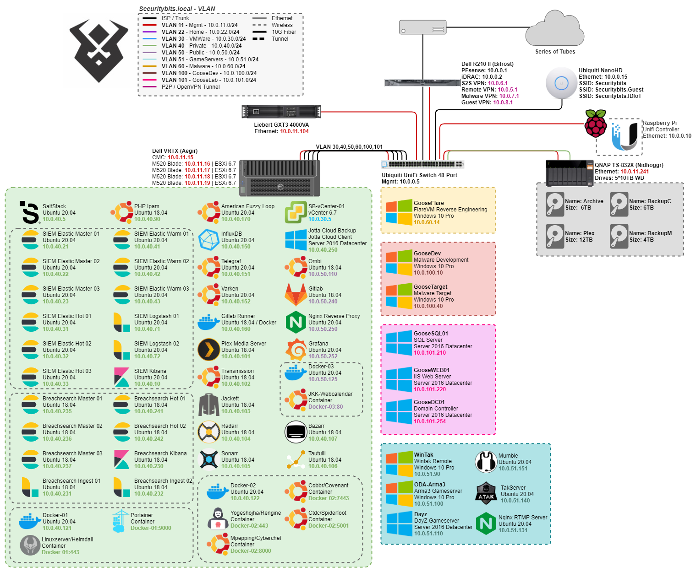
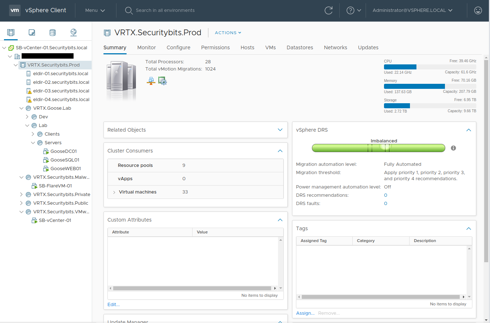
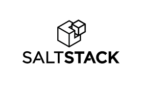
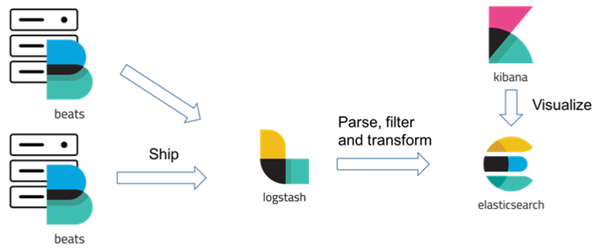
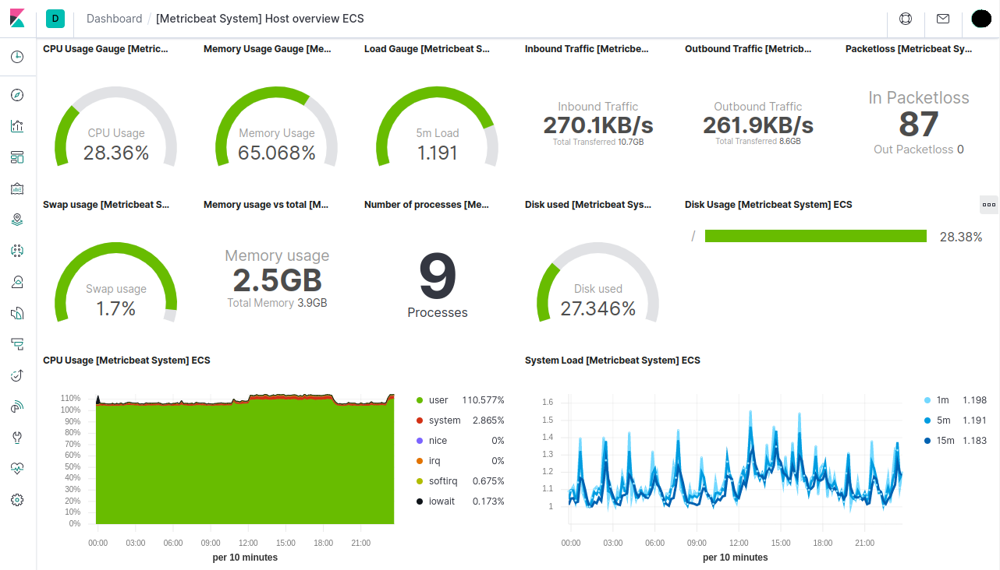
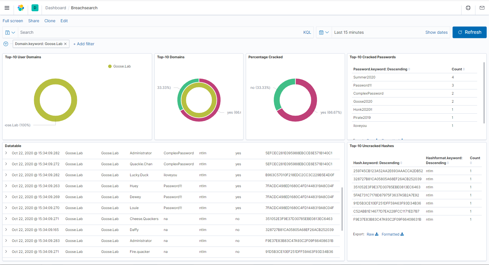
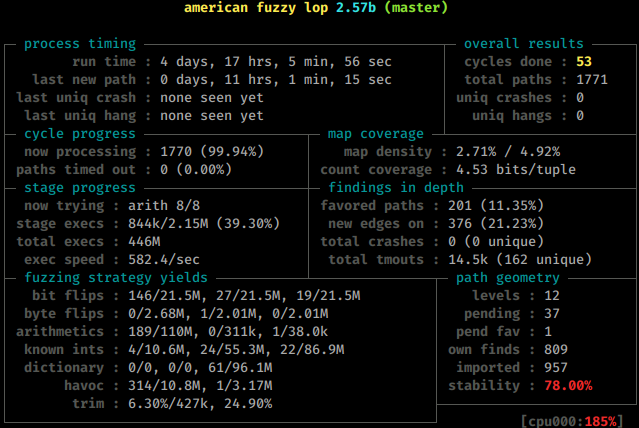

What Virtual Machines Am I Running?
Disclaimer, this is subject to change… very often and very quickly!

To start off everything that you can see is running under ESXi-6.7 on my VRTX, which is managed by vCenter-6.7. Though this will soon be upgraded to 7.0 as soon as VMware releases 7.0u1.
Hypervisor
Dell VRTX (Aegir)
This is my main hypervisor server, basically a homelab in a box! the nifty thing about the VRTX is that you do have the storage as well as 4 blades in one 5u package! This makes it really convenient, although you kinda miss out on all the good homelab life, in regards to multiple rack servers and networking.
Blades
Theres two sets of blades with identical hardware:
Eldir-01 / 02
Dell M520
Xeon E5-2420v2
64GB DDR3 ECC-Dual
2x Seagate 146GB 15k SAS
Eldir-03 / 04
Dell M520
2x Xeon E5-2407
44GB DDR3 ECC Dual Rank
VM Storage
The VRTX comes with 25 2,5” SAS Disk shelf! which makes it possible to have up 48TB of storage shared between the 4 blades!
Currently I have 9 drives, with 8 of them spanned in a Raid50 for 3,3TB and one in hot spare (in case one drive would break it would automatically re-silver).
Fileserver
QNAP TS-832X
While the R510 was a pretty potent server, it was quite redundant as any kind of fast storage since the VRTX had its own internal diskshelf. So I began to look for replacement, and landed on the QNAP Ts-832X with dual 10Gbps SFP+, and dual 1GbE. Together with 8 disk slots it became a pretty good bulk storage for backups of clients and server configs. There’s currently 5 disks which are shucked WD Elements 10TB, so far they have been chugging along pretty well. And it also left me room for 3 additional drives before the next serious upgrade.
Virtual Machines
Now that we got that out of the way, lets dive into the meat of this post. I’ve split my VMs into a few different subnets to keep them organized!
VMWare
vCenter

4 vCPU/16GB RAM/~200GB Disk
My vCenter is the main control hub for my homelab and its VMs, where all the provisioning happens, as well as the internal vmware network. It’s chomping RAM like nobody’s business, but it is necessary as I do not want to switch to Proxmox or Xen server.
Private
My Private stack is where I put the VMs that I do not want to have direct internet access and mainly where I put internal services.
SaltStack

2 vCPU/2GB Ram/100GB Disk
Many people have probably heard of puppet, chef and ansible… but maybe not SaltStack. It works by a master-minion system, this is the master, and on each linux VM there is a minion process running. You can also use salt-ssh, which makes it login and run commands, which works, but you loose some of the functions such as the reactor-bus etc. which define actions/states that the minion will perform on changes. Now there’s a rather big debate on what orchestration tool that you should use. Granted there is a lot that’s already made for ansible, and it is popular and more heard of as well. The reason that I fell down into SaltStack is that I found it had all the features that I wanted from ansible, and then some. Suffice it to say that all the following virtual machines are provisioned to my vCenter using Salt-Cloud.
SIEM / Network logging solution

Now this setup might warrant some comments about “overkill” (and probably its own post), but safe to say is that I am a huge elastic-stack fan. My cluster is a Hot-Warm architecture, with the addition of, if I ever need to, also do cold storage. Each of the nodes are properly secured, which isn’t the easiest task. All the log transfer, rotation etc. are being done by either syslog, or beats. I do run the whole suite of beats:
- Filebeat, for every relevant file based log.
- Auditbeat, security events such as file changes, user logins or processes.
- Packetbeat, packets and netflow.
- Metricbeat, Well basically what it says, it gathers metrics from VMs and Docker containers.
SIEM Elasticsearch Master
2 vCPU/4GB Ram/32GB Disk
The Elastic-stack Master nodes are the glue that holds the cluster together, and if you didn’t know… they LOVE ram! Now why 3 you might ask? Split-brain syndrome! 3 is the recommended minimum number in order to not have a split-brain syndrome, which happens when you have an even number of masters and what might happen is a 2 sided argument where both sides are even. In order to tip the scale Elastic recommends that you have an uneven number of nodes. Luckily the master nodes are usually not the largest VMs that you have so it doesn’t hurt to have 3 or 5 depending on the use case. Also note that these are only responsible for the Mastering of the other nodes, so they are not responsible for ingesting data, storing data or manipulating data.
SIEM Elasticsearch Hot
4 vCPU/6GB Ram/250GB Disk
The “Hot” nodes have two main functions, ingesting logs, and storing a couple days of logs, on several shards on the hot nodes. These usually reside on SSD storage and are the main nodes in the cluster that handles searching the most relevant data. Depending on your lograte you might want to have it on SSDs and on 10gig network. In my environment I have ~300events / second, and a daily index is around 10-25GB, and a daily index is held on a hot node for 14 days before its rotated to a warm node.
SIEM Elasticsearch Warm
4 vCPU/6GB Ram/250GB Disk
A warm node is only responsible for searching data, and storing data long term. These nodes are usually on a regular spinning disk as that kind of storage are cheaper, and a user does not generally hit the warm indexes as often as the hot ones. For my setup, depending on the index I keep for example my Filebeat (syslog) for 90days, which may seem long, but mangling data is kind of fun!
SIEM Logstash
2 vCPU/2GB Ram/32GB Disk
Now other Elastic-Stack purists might yell at me for running beats through logstash. But I have some reasons, mainly I like to have one interface for ingesting logs! I do run SNMP fetching, syslog mangling, ingesting iDRAC logs etc. to my logstash, which would just makes the firewall rules easier to manage as it only exposes the logstash ports externally from the cluster! Doing it this way also load balances the lograte rather nicely.
SIEM Kibana
4 vCPU/4GB Ram/32GB Disk
Every logging solution, wether it be influx, nagios etc. need a front end. Elastic-Stacks solution is Kibana, this also contains apps such as Development tools for API-calls, SIEM detection, Health metric visualization etc.

Breachsearch Elastic Cluster
So this setup is not much more different then what the SIEM solution looks like, except its not in a Hot-Warm configuration as in this cluster there is only “hot” data. Though the purpose is a bit different, I do enjoy my fair share of data breaches. And I have a couple times referenced those breaches in engagements, and found working passwords (Credential stuffing). Which is always fun! But one dark secret of mine is that I like as with the SIEM Cluster to mangle and pivot data all manner of ways, and I love password statistics, so this was a extremely fun project. How I specifically did this setup, with code examples and the Goose.Lab database will be provided in an upcoming blogpost which will be linked Placeholder.
Breachsearch Master
2 vCPU/4GB RAM/32GB Disk
Again, these are the brains of the operation, and they are running a tight ship. I have 3 Masters in order to avoid the Split-brain syndrome,
Breachsearch Hot
6 vCPU/6GB RAM/250GB Disk Need somewhere to hold the data. While I don’t have a Hot-Warm architecture for the Breachsearch cluster, it still acts as a hot node in regards to shard count. The data is also not indexed depending on the timestamp, but more like a straight database where you make searches on all data at the same time, hence these have a bit more resources then the SIEM cluster.
Breachsearch Kibana
4 vCPU/4GB RAM/32GB Disk The main function of this VM is only to visualize the data in a proper way.
Breachsearch Ingest
4 vCPU/4GB RAM/100GB Disk
Now this is where it gets interesting, and where most of the data ingestion happens. The field inexation happens in a Logstash dissect filter which looks like:
filter{
dissect {
mapping => { "message" => "%{DumpName} %{Username} %{Password} %{Hash} %{Hashformat} %{Cracked} %{Domain}" }
}
mutate{
remove_field => [ "host", "port" ]
}
}
Which basically takes a netcat session, or a specific file and splits the message into different headers and indexes the data into the proper elastic-index. I’m also positive that this could be achieved with a Filebeat processor, but im lazy(-ish) and I know Logstash!

TIG(V)-Stack
So yeah, I broke and actually started using the TIG Stack again, not because my ELK stack is bad or anything but more because Telegraf and Varken are easier to integrate to more “esoteric” devices, such as BSD, Switches, UniFi etc.
Telegraf
2 vCPU/2GB RAM/32GB Disk
Telegraf is the TIG stacks application which pulls the data and metrics from devices, such as iDRAC, or switch port speeds from switches and routers, and seamlessly puts that data into InfluxDB so that it can be displayed with Grafana.
InfluxDB
4 vCPU/4GB RAM/100GB Disk
This is the “I” in the TIG stack, and InfluxDB is the de facto standard time series database for this kind of implementation. The VM currently holds two different databases:
- Telegraf - A database which holds the direct output of the Telegraf VM, for example; VMWare Metrics, Switch and SNMP Metrics.
- Varken - The database for Varken, which collects metrics and items from Radarr, Sonarr, Tautulli, Ombi and UniFi.
Varken
2 vCPU/2GB RAM/32GB Disk
Varken is a tool which pulls data and metrics from applications like, radarr, lidarr, sonarr Unifi etc. It is a cool project and currently a really effective way to see the requests which comes from Ombi and its users.
PHP Ipam
1 vCPU/1GB Ram/32GB Disk
Since I like organization, this was one of the best VMs that I could create. As this allows me to have my IP address space organized also makes it easy to look up where I have free addresses for new projects.
Gitlab runner
2 vCPU/2GB Ram/250GB Disk
This is actually the only docker host that I have, and is a companion to my gitlab server. This is responsible to run the pipelines in docker containers that are defined in gitlab. wether it can be to build malware stubs or compile malicious binaries (Yeah I’m a pentester, what did you expect).
AFL-Master
4 vCPU/4GB RAM/100GB Disk
Since I do a bunch of work in Penetration Testing etc. I thought that having a dedicated, easily re-provisioned Fuzzing VM would be beneficial. This is a machine that automatically installs AFL, and is usually one of those that are just best left be to do its thing.

Jotta Cloud-Backup
2 vCPU/4GB RAM/40GB Disk
This is the only Non-Testing Windows VM that I run, because through my ISP and my contract I get a “Unlimited Cloud Backup solution” to JottaCloud… did I mention that I got it for free? You can probably also guess what drives are currently mounted to be backed up!
Plex server
4 vCPU/4GB Ram/100GB Disk
This is my only plex server for movies and tv-series. Since I travel 2-3 days sometimes, making hotel rooms boring! so this is accessible for me using my plex account. All the media is stored on Nidhoggr(NAS) and accessed over SMB.
Transmission
2 vCPU/2GB Ram/250GB Disk
A torrent client with a WebUI, which is running over a VPN…. for Linux ISOs…
Tautulli
2 vCPU/2GB Ram/32GB Disk
This one provides me some monitoring and statistics on movies and series on the Plex media server. This is not being used so much, but graphs are fun!
Radarr
2 vCPU/2GB Ram/100GB Disk
A VM which will organize and keep track of all your Movies, and also hooks into the download client so that it gets the highest quality.
Sonarr
2 vCPU/2GB Ram/100GB Disk
It’s a similar too as Radarr, but for TV Shows, keeping track of your episodes and series automatically.
Bazarr
2 vCPU/2GB Ram/100GB Disk
Bazarr hooks up to your Radarr and Sonarr, and will download the correct subtitles for your specific languages and media!
Jackett
2 vCPU/2GB Ram/100GB Disk
Jackett hooks into the Radarr and Sonarr VMs and just adds different trackers, and more options for finding the correct media.
Docker 01
4 vCPU/4GB RAM/100GB Disk
So I finally caved and started messing with Docker a bit more for my network services, and I wont hide and say that I don’t like it! We’ll see how much of my running services that I actually will convert to containers, but its nice as some tooling likes to run on docker.
This Docker host is mainly for general containers, that should be in the private network and is not really touching or osting anything for the public web.
Portainer/Portainer
So this is the docker master, it’s connected to all the docker hosts with the Portainer/Agent. Basically it is my interface to deploy containers across all docker hosts, and manage my containers.
Linuxserver/Heimdall
Well, it was either this or organizr. And I liked the name Heimdall better! And its a dashboard for all my applications.
Docker 02
4 vCPU/4GB RAM/100GB Disk
So this Docker host is for those tools that I don’t really want to associate with my Home IP, therefor it is bound to the same VPN Connection as Transmission.
Cobbr/Covenant
This is a development and testing suite for the Covenant C2 Framework, been mostly using Cobalt-strike as a C2 Framework. While it IS really potent, its still too much powershell based. So I am currently trying Covenant C2 as an alternative.
Yogeshojha/Rengine
An Automated Recon Engine to do discovery on public accessible sites.
Link: Rengine
Ctdc/Spiderfoot
An automated Open Source Intelligence Framework, which I use On and off of work!
Link: Spiderfoot
Mpepping/CyberChef
This is the Docker image of the British Intelligence GCHQ Web App that does simple and complex encoding/decoding operations. Mainly used as an internal tool for CTFs.
Link: Github/CyberChef
Public / DMZ
This segment is where I put all my public facing applications, with rather strict firewall rule set which is based on host to host traffic.
Ombi
2 vCPU/2GB Ram/250GB Disk
This is a self hosted application where users can create requests for plex.
Docker 03
4 vCPU/4GB RAM/100GB Disk
This host is in my Public/DMZ Segment and is the main docker host where I’ll host all my public websites.
Securitybits/Jkk-Webcalendar
I am a member of a local rock climbing community, and have been for the last couple years hosted a small php web application for smartphones, which displays the club activities the coming 2 weeks in a nice format.
Gitlab
2 vCPU/4GB Ram/250GB Disk
Everyone needs somewhere to store their source code, this Gitlab instance is responsible to house my own projects which I do not want to have on any other SaaS solution (Github). I do a lot of security research, writing malware etc. for professional use. Working as a Pentester and Security Researcher I hate going out and compromising a client (on purpose and with authorization), and my malware is detected by signatures or even before execution time. Before I started hosting my own Gitlab, I did a test with creating a unseen custom backdoor, tested on a fully updated windows 10, upload it to a private repo, wait for a week and retest it on a fresh windows 10 instance… detected, while yes it was not a ‘state of the art’ malware, but it was enough for me to question where I should store my research. Remember, the cloud is just someone else computer. I also store all the states and maps for SaltStack on my Gitlab, which makes it accessible even if my internet dies.
Nginx Reverse Proxy
2 vCPU/2GB RAM/32GB Disk A simple reverse proxy for my different web services, nothing that’s out of the ordinary. This VM also handles Lets Encrypt TLS Certificates.
Grafana
So Grafana is the last component in the TIG(V)-Stack, an its the famous frontend that all homelabbers love to show off!
Gameservers
So this is a network segment where I keep “Closed Public”-servers, as in those servers that people can access if they have access. And as the name implies this segment is mostly for gameservers that I’d like to share access to.
ODA-Arma3
4 vCPU/6GB RAM/240GB Disk
So this is one of the first gameservers that I put up, and is a always on server for me and my friends to have our standing game nights on, as we do enjoy that “Milsim” gameplay of a ODA/SF Unit.
DayZ
4 vCPU/6GB RAM/240GB Disk
Same as the ODA-Arma3 server but this is for DayZ Standalone.
TakServer
2 vCPU/2GB RAM/100GB Disk
So ATAK-Civ has been one of those applications that I really wanted to try out for a long time. What it is, a Blue Force Tracker and information sharing app for Android and Windows. FreeTAKServer is built on a python3 Implementation of TakServer, which is lightweight and easy to run on much of any hardware that has pip and python. (Stay Tuned for a SaltStack installation script)
WinTAK
2 vCPU/4GB RAM/42GB Disk
Having the TakServer does nothing without also having clients to share the information with. The WinTAK server is a Windows based server where I can remote to using a VPN and have access to the TAK network wherever I go.
RTMP
2 vCPU/4GB RAM/100GB Disk
RTMP Is a “Real-Time Messaging Protocol” which I am currently using to collect and share media streams from various types of cameras and applications. This is a NGINX implementation as I found that was the easiest to implement and run.
Mumble
2 vCPU/2GB RAM/32GB Disk
Mumble is one of those VoIP applications that are just simple and they work. This is for a project I’ve had in my head for a while and is dedicated to radio communication using hand held PMR Radios.
Malware
Now for the fun stuff, my malware net is the most restrictive net that I have, basically only accessible from a VPN and only have a outbound monitored internet connection. This is also the Segment that have the VMs in highest rotation, for good reason. Its purpose is basically a safe place to detonate malware and reverse live samples.
GooseFlare
4 vCPU/8GB Ram/80GB Disk
There’s always 1-3 instances of FireEYEs Flare VM available in this net for malware research. If you haven’t heard of FlareVM it’s a simple setup script for a windows VMs that contains most of all tools you’ll need in order to reverse engineer a malware. The script is actively maintained by pull requests and FireEYE, highly recommended if you are interested in reverse engineering.
GooseDev
Much like the Malware segment, I have a segment for developing malware. I will put up another blog post specifically on this network and its hosts but the general idea is to have a network with hosts that have different AVs installed and block by GPO and in the network firewall malware submissions to the mother ship.
GooseDev
4 vCPU/8GB Ram/150GB Disk
A simple windows 10 Pro host, with Python and visual studio installed. Since a lot of malware and C2 framework have moved on from Powershell into a more unmonitored .NET and Powershell-Less execution, there was a need to have a development machine which was easily restored to an original state when a project was completed, so that there was no lingering artifacts. During Red-Team engagements this is also a Lab which goes through heavy modifications whenever we learn something new from the client, in order to mimic our target environment as good as can be to come out successful in the end. My current project is .NET DLL injections into memory for which I’m doing a small write up, stay tuned!
GooseTarget
2 vCPU/4GB Ram/60GB Disk
A standard windows 7/8/10 VM which is usually as default as can be, with the only modification is that I turn off sample submissions in the Group Policy so that I don’t burn my applications pre-engagement.
GooseLab
Much like GooseDev subnet there’s GooseLab, which is more of a static environment and a small domain playground to test new attacks and applications in a more controlled domain. Whats currently missing is actually a logging solution, which will probably be another Elastic-Stack and Winlogbeat.
GooseSQL
2 vCPU/4GB Ram/40GB Disk
Simple SQL Server with one database defined at the moment. Used for Authentication and some basic data storage for GooseWeb.
GooseWEB
2 vCPU/4GB Ram/40GB Disk
IIS Server that runs a small inventory management application connected to the SQL Database for authentication and data storage.
GooseDC
2 vCPU/4GB Ram/40GB Disk
Domain controller for the domain “Goose.Lab” 20 users with different degrees of access. There’s also some small special case configurations in GPO, Groups and auth schemes which makes for an interesting Saturday evening of hacking.
Finishing up
So yeah, now I finally took the step and started using Docker to some extent. I can at least say that it is going to be a mainstay server in my VM stack, though I don’t know how much but at least for some toolings. But I’ll still use vCenter as the mainstay application to manage the VMs, and Portainer (or maybe take another step to Rancher) to manage my containers.
One might also ask where this blog is hosted? Actually it is on Github-Pages together with a small actions script which runs every time I make a push to the blog branch. If you want you can clone and repurpose the repo for your own blog, you can find the repo here: Securitybits Github
If you have read this far, Good job! and thank you, if you have any questions don’t hesitate to contact me!
Changelog
2021-02-19
Virtual Machine Changes:
- Added: ODA-Arma3
- Added: DayZ
- Added: WinTAK
- Added: Mumble
- Added: TakServer
- Added: RTMP Server
2020-10-20
Hardware changes:
- Removed Cisco C2960-48TS-S in favor to a Ubiquiti 48-Port Switch
- Added Raspberry Pi 4GB Unifi Controller
- Added Ubiquiti NanoHD Access Point
- Switched Dell R510 FreeNAS to a Qnap TS-832X
Virtual Machine Changes:
- Added: AFL-Master
- Added: BreachSearch cluster
- Added: Jotta Cloud-Backup (Windows VM)
- Added: InfluxDB
- Added: Varken
- Added: Telegraf
- Added: Grafana
- Added: Docker-host 01/02/03
- Added: Rancher-Master & Rancher-Worker 01/02
- Removed: WebCalendar
- Container: Portainer/Portainer
- Container: Linuxserver/Heimdall
- Container: Securitybits-io/jkk-WebCalendar
- Container: Covenant/Covenant
- Container: Yogeshojha/Rengine
- Container: Ctdc/Spiderfoot
- Container: Mpepping/CyberChef